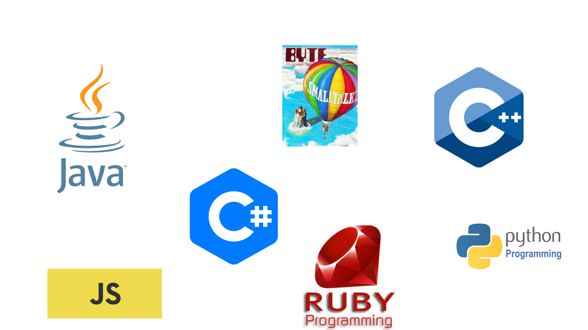

Objektorientiertes Design und Programmierung
Marcel Lüthi
Departement Mathematik und Informatik
Objektorientierte Programmiersprachen
Objektorientierte Design
“Pertaining to a technique or a programming language that supports objects, classes, and inheritance.”
ISO/IEC 2382-15
“OOP to me means only messaging, local retention and protection and hiding of state-process, and extreme late-binding of all things.”
A. Kay
Design und Programmiersprache
Wichtig beim OO Design sind Prinzipien (Information Hiding, Modularisierung, late binding), nicht die Programmiersprache.
- OO Sprachen helfen Design direkt abzubilden
- Nicht OO Sprachen verlangen Mehraufwand / Disziplin

- Gutes Beispiel für OO Design in C: GTK+
Terminologie
- Klasse implementiert Abstrakten Datentyp
- Daten heissen Attribute
- Operationen heissen Methoden
- Konstruktor kreiert neue Instanzen
- Instanzvariablen sind Referenzen auf Objekte
- Laufzeitstruktur die Menge der Objekte zur Laufzeit
- Jedes Objekt ist zur Laufzeit eindeutig identifiziert
Schnittstellen
Nutzung der Funktionalität eines Objekts nur über wohldefinierte Schnittstellen.
- Mehrere Objekte können gleich Schnittstelle anbieten
- Ein Objekt kann mehrere Schnittstellen anbieten
Beispiel aus Java:
public class ArrayList<E> extends AbstractList<E>
implements List<E>,
RandomAccess,
Cloneable,
java.io.Serializable {}
Polymorphismus und dynamische Bindung
- Dynamische Bindung (late binding): Variablen können zur Laufzeit an verschiedene (verwandte) Typen gebunden werden
- Polymorphismus: Zur Laufzeit wird Methode entsprechend dem Objekttyp verwendet.
Beispiel: Polymorphismus
interface Foo {
public void bar();
}
class FooImpl1 implements Foo {
public void bar() { System.out.println("in FooImpl1"); }
}
class FooImpl2 implements Foo {
public void bar() { System.out.println("in FooImpl2"); }
}
void doSomethingWithFoo(Foo foo) {
foo.bar();
}
var Foo foo = new FooImpl1();
doSomethingWithFoo(foo);
- Unterschiedliche Ausgabe je nachdem ob
foo anFooImpl1 oderFooImpl2 gebunden wird.
Objektorientierung als "Messaging"
- Objekte verwalten Zustand der Daten (Attribute)
- Nehmen Nachrichten/Requests entgegen (Methoden)
- Senden Antwort zurück und/oder verändern Zustand
Methodenaufruf = senden einer Nachricht
Beispiel: Methodenaufruf als Nachricht
class BankAccount {
private FxConverter fx = new FxConverter();
private double balanceCHF;
void depositEur(double amount) {
double asCHF = b.convertEurToCHF(amount))
this.updateBalance(balanceCHF + asCHF)
}
void updateBalance(double newBalance) {
balanceInCHF = newBalance;
}
}
// somewhere in currentObject
someAccount.depositEUR(500);

OO Design - Übersicht
- Teilt ein System in Module auf
- Module kapseln Daten und Funktionalität
- Objekte können selbst Objekte enthalten.
- Objekte sind zur Laufzeit eindeutig identifiziert
- Können Nachrichten/Requests empfangen.
- Late binding: Es wird erst spät (zur Laufzeit) entschieden welches Objekt Nachricht bearbeitet